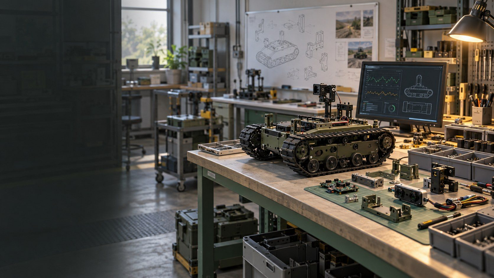
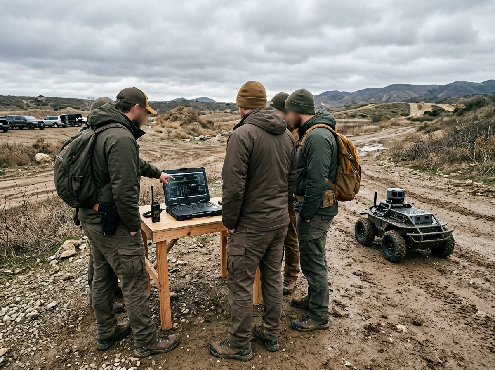
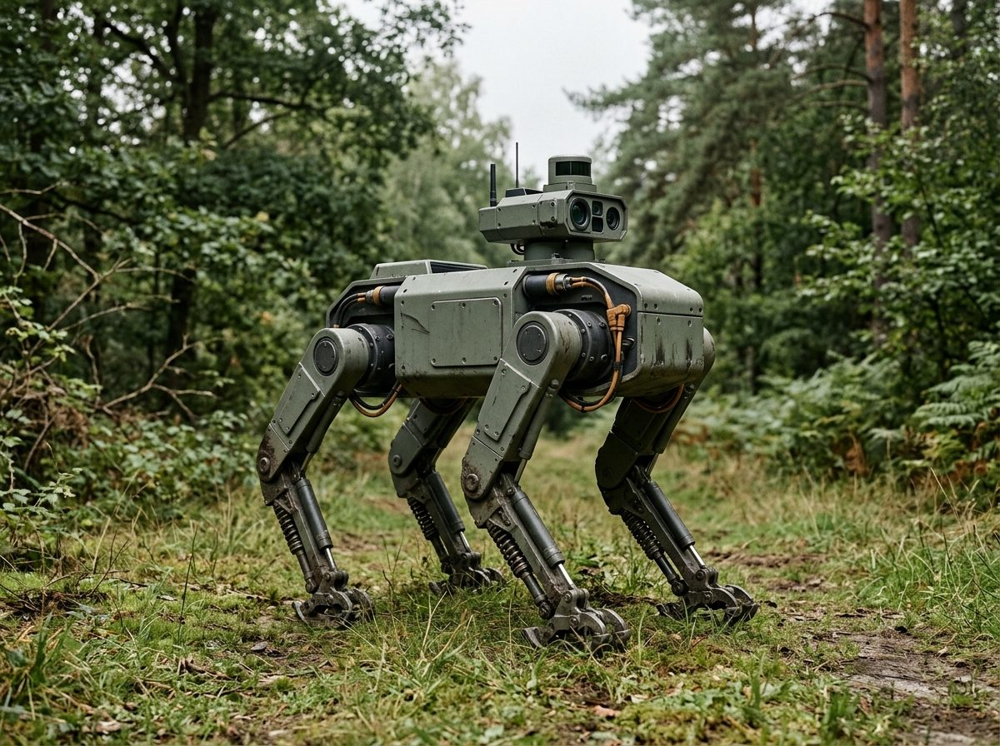
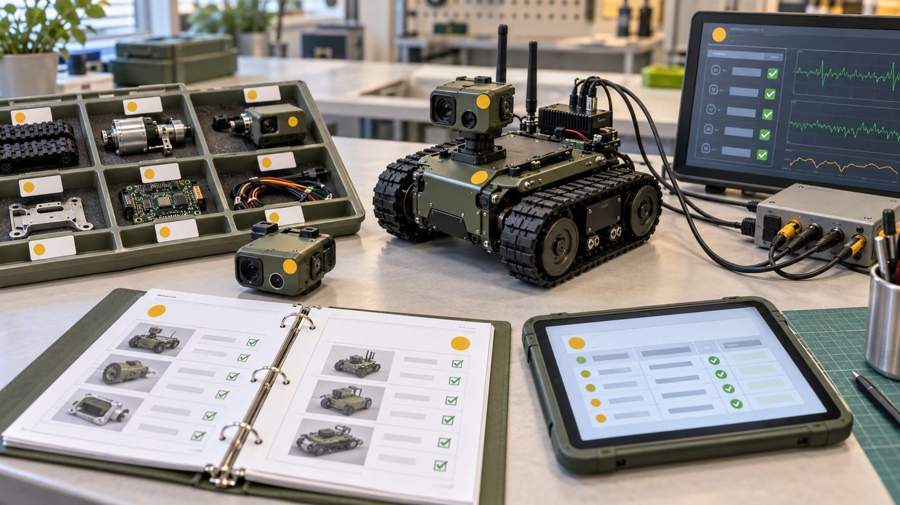
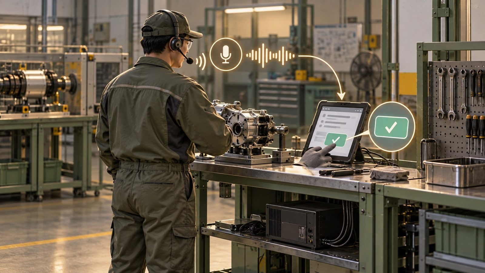

A4AI 기획 보고 · 2026.10.16
A4AI의
제조 진출 방안
현장 데이터 활용과 제조 기반 준비
기획부 · 신입 사원 발표 · 약 22분
개념 이미지 (AI 생성)오늘 말씀드릴 순서현장 수요 → 진출 경로 → 지원사업 → 데이터 → 실행 계획
01
현재 제조 흐름 분석제조 AI 적용 범위와 진입 기회
02
진출 경로와 초기 조건단계별 경로, 공장등록과 실제 역량
03
공고 재선별과 과제 중복준비·시험 지원 후보, 걸러지는 이유, 업무 분리
04
보유 데이터·VCM 활용음성·소음 데이터와 현장 작업기록
05
시작 준비와 실행 계획준비사항, 10월 할 일, 6개월 계획

개념 이미지 (AI 생성)A4AI 기획 보고 · A4AI의 제조 진출 방안
제조 진출의 출발점현장 문제를 좁히고, 검증과 제작 기반을 순서대로 준비
핵심지금은 1단계 — 수요처 한 곳과 작업 한 종류를 정하는 것부터 시작
출처: 회사 제공 자료·현황 (2026.10.16, 원문 비공개) · 회사 현황과 공고 조건을 바탕으로 작성한 기획 제안
A4AI 기획 보고 · A4AI의 제조 진출 방안

01
현재 제조 흐름 분석
제조 AI가 어디까지 쓰이는지, 우리가 들어갈 업무는 어디인지
제조 AI의 적용 범위생산 설비를 넘어 설계·작업·물류·경영 업무까지 확대
- 제조 AI는 생산 설비를 넘어 설계·작업·물류·경영 업무까지 넓어지는 중
- 범위가 넓어질수록 "어느 업무부터"를 먼저 정해야 함
- 정책 자료는 방향의 근거 — 실제 신청 가능 여부는 개별 공고로 판단 (부록 F)
- 설비 제어보다 사람이 하는 작업 영역에서 출발점 검토
핵심A4AI 검토 방향: 구체적인 현장 업무를 정한 뒤 진입 범위 선택
출처: 중소벤처기업부, 제조 AI 솔루션 공모전 보도자료 (2025.09.29) · 중소벤처기업부, 2026 스마트제조혁신 지원사업 통합공고
스마트제조혁신 중소벤처기업부가 중소 제조기업의 스마트공장·제조 AI 도입을 지원하는 사업 묶음
A4AI 기획 보고 · 01 현재 제조 흐름 분석
제조기업의 업무와 진입 기회생산공정과 현장 업무 지원을 구분해서 접근
핵심우선 가설: 작업 기록처럼 현장 진입 범위를 작게 정의할 수 있는 업무
출처: 중소벤처기업부, 제조 AI 솔루션 공모전 보도자료 (2025.09.29) · 회사 현황과 공고 조건을 바탕으로 작성한 기획 제안
A4AI 기획 보고 · 01 현재 제조 흐름 분석
02
진출 경로와 초기 조건
한 번에 공장을 갖추기보다, 검증 결과에 따라 단계를 넘어갑니다
현실적인 제조 진출 경로현재는 1단계 준비, 검증 결과에 따라 다음 단계 검토
출처: 회사 제공 자료·현황 (2026.10.16, 원문 비공개) · 회사 현황과 공고 조건을 바탕으로 작성한 기획 제안
A4AI 기획 보고 · 02 진출 경로와 초기 조건
공장등록과 실제 제조 역량등록은 준비 항목 중 하나이며, 생산 운영 조건은 별도로 확보
핵심공장등록은 행정상 정비 — 제작 운영과 납품 증빙은 따로 쌓아야 지원 자격이 열림
출처: 회사 제공 자료·현황 (2026.10.16, 원문 비공개) · 경북테크노파크, 지역특화형 방산·모빌리티 스마트공장 공고·제출서류 · 회사 현황과 공고 조건을 바탕으로 작성한 기획 제안
공장등록 「산업집적활성화 및 공장설립에 관한 법률」에 따라 제조시설을 지자체에 등록하는 절차
납품 증빙 납품내역서·거래확인서처럼 실제 거래가 있었음을 보여 주는 서류
A4AI 기획 보고 · 02 진출 경로와 초기 조건
03
공고 재선별과 과제 중복
지금 조건에 맞는 공고만 다시 고르고, 진행 과제와 겹치는 부분을 나눕니다
시작 준비에 맞는 지원사업공고 기준일 2026.10.16 · 선정·잔여 물량은 별도 확인
출처: 포항테크노파크, 경북AX랩 활용기업 모집 공고·신청서 · 구미전자정보기술원, 2026-294호 공고·신청서
AX AI 전환 — 업무에 AI를 들여 일하는 방식을 바꾸는 것
상시 모집 마감일 없이 받다가 정원·예산이 차면 끝나는 방식
A4AI 기획 보고 · 03 공고 재선별과 과제 중복
기술지도·시험 지원 후보개발할 제품과 시험 항목이 정해진 다음 검토
출처: 한국로봇융합연구원, 2026-21호 애로기술 지원 공고·신청서 · FITI시험연구원, 공유공장 제조창업 시험지원 추가모집 공고
간접지원 회사에 현금을 주지 않고, 지원 비용을 전문가·수행기관에 지급하는 방식
애로기술 기업이 혼자 풀기 어려운 기술 문제
A4AI 기획 보고 · 03 공고 재선별과 과제 중복
공고가 주로 걸러지는 이유공장등록 외에도 실적·지역·사업 이력·준비 기간이 신청을 제한
핵심10.16 기준 마감 7일 이하(10.23까지) 공고는 준비 기간 부족으로 이번 검토에서 제외 — 다음 차수 대비
출처: 경북테크노파크, 지역특화형 방산·모빌리티 스마트공장 공고·제출서류 · 중소기업기술정보진흥원, 중소제조 특화 Multi AI Agent Jump-up Track 공고 · 대전테크노파크, 3D프린팅 시제품 제작지원 공고 · 회사 제공 자료·현황 (2026.10.16, 원문 비공개)
공급기업 Pool 정부 사업에서 기술을 공급할 수 있는 기업으로 미리 등록해 두는 명단
A4AI 기획 보고 · 03 공고 재선별과 과제 중복
진행 과제와 신규 지원의 접점참고자료 원문 기준 · 수행 중과 과거 완료·신청 상태를 구분
핵심신규 신청의 "중복 없음" 확정에는 협약서·세부 예산·최신 수행계획이 필요
출처: 회사 제공 VCM·UGV·RISE 계획서, K-방산 제출본 (원문 비공개)
VCM VoiceClear-M — 군용 무전기용 음성명료도·소음감쇄 AI 칩 모듈 과제
RISE 지역혁신중심 대학지원체계 — 지자체·대학 연계 지원 사업
A4AI 기획 보고 · 03 공고 재선별과 과제 중복
신규 신청 전의 업무 분리기술·데이터 활용과 새 지원금으로 수행할 업무를 구분
출처: 회사 제공 VCM·UGV·RISE 계획서, K-방산 제출본 (원문 비공개) · 한국로봇융합연구원, 2026-21호 애로기술 지원 공고·신청서 · 구미전자정보기술원, 2026-294호 공고·신청서 · 회사 현황과 공고 조건을 바탕으로 작성한 기획 제안
A4AI 기획 보고 · 03 공고 재선별과 과제 중복

04
보유 데이터·VCM 활용
이미 가진 음성·소음 데이터와 기술을 현장 기록으로 이어 봅니다
보유 음성·소음 데이터의 활용기존 데이터와 AI 기술을 제조 현장 검증의 기반으로 활용

개념 이미지 (AI 생성)핵심보유 데이터 목록화 후, 실제 제조 환경에서 필요한 데이터를 추가
출처: 회사 제공 자료·현황 (2026.10.16, 원문 비공개) · 회사 제공 VCM·UGV·RISE 계획서, K-방산 제출본 (원문 비공개)
대표성 모은 데이터가 실제 현장의 소음·말투·작업 상황을 고르게 담고 있는 정도
A4AI 기획 보고 · 04 보유 데이터·VCM 활용
현장 음성 작업기록의 핵심한 번 남긴 기록을 검색·인수인계·분석에 다시 활용
출처: 회사 제공 자료·현황 (2026.10.16, 원문 비공개) · 회사 제공 VCM·UGV·RISE 계획서, K-방산 제출본 (원문 비공개) · 회사 현황과 공고 조건을 바탕으로 작성한 기획 제안
STT 음성을 글자로 바꾸는 기술
메타데이터 작업·설비·시간처럼 기록 자체를 설명하는 정보
A4AI 기획 보고 · 04 보유 데이터·VCM 활용
VCM과 현장 기록의 연결기존 과제의 기술 방향을 살리되, 신규 개발 범위는 별도 검증
핵심VCM의 연장 가능성은 있으나 제조 적용 성능과 신규 지원 적격성은 미확정 — 군용 무전과 제조 현장은 장비·소음·용어·목적이 다름
출처: 회사 제공 VCM·UGV·RISE 계획서, K-방산 제출본 (원문 비공개) · 회사 제공 자료·현황 (2026.10.16, 원문 비공개) · 회사 현황과 공고 조건을 바탕으로 작성한 기획 제안
A4AI 기획 보고 · 04 보유 데이터·VCM 활용
첫 검증의 범위와 확인 지표수요처 한 곳의 작업 한 종류부터 시작하는 기획 가정
출처: 회사 현황과 공고 조건을 바탕으로 작성한 기획 제안
기준선 도입 전 현재 상태를 같은 방법으로 잰 값 — 개선 여부를 비교하는 출발점
A4AI 기획 보고 · 04 보유 데이터·VCM 활용
05
시작 준비와 실행 계획
10월에 갖출 문서와 6개월 동안 확인할 결과
시작 전에 갖출 준비사항제조·설비 기반이 없는 현재 조건에 맞춘 준비 순서
핵심공간·설비 구매는 구체적인 제작 업무와 견적이 나온 뒤 검토
출처: 회사 제공 자료·현황 (2026.10.16, 원문 비공개) · 회사 현황과 공고 조건을 바탕으로 작성한 기획 제안
A4AI 기획 보고 · 05 시작 준비와 실행 계획
10월: 공장등록 후 계획 준비등록 정비와 함께 현장 검증을 시작하기 위한 문서 준비
핵심바로 설비를 사거나 여러 공고에 일괄 신청하는 일정이 아님 — 문서를 갖춘 뒤 다음 단계 판단
출처: 회사 현황과 공고 조건을 바탕으로 작성한 기획 제안
A4AI 기획 보고 · 05 시작 준비와 실행 계획
6개월 실행 계획단계별 결과를 확인한 뒤 다음 범위와 비용을 조정
참고2027년 1~4월에 되풀이되는 정기 공고(스마트공장·바우처·방산·창업 R&D)는 부록 H 달력으로 미리 준비
출처: 회사 현황과 공고 조건을 바탕으로 작성한 기획 제안 · 기업마당·기관 공고 및 보도(2026년 실제 공고·접수일), 재정리 사이트는 원문 대조 필요
A4AI 기획 보고 · 05 시작 준비와 실행 계획
최종 결론제조 진입의 첫 단계는 현장 수요와 데이터 활용 검증
핵심설비보다 수요·데이터·역할·예산 네 가지 문서를 먼저 갖추고, 그 결과로 제작 범위를 정합니다
출처: 회사 제공 자료·현황 (2026.10.16, 원문 비공개) · 회사 제공 VCM·UGV·RISE 계획서, K-방산 제출본 (원문 비공개) · 회사 현황과 공고 조건을 바탕으로 작성한 기획 제안
A4AI 기획 보고 · A4AI의 제조 진출 방안
질의응답
제조 진출 방향과 준비 범위
부록 A · 준비 지원 공고의 세부 조건기준일 2026.10.16 · 신청 직전 원문·잔여 모집 확인
| 공고 · 주관기관 | 원문 핵심 조건 | 추가 확인·준비 |
|---|---|---|
| 경북 AX랩 포항테크노파크 우선 검토 | 제조 AX 서비스 사업화 의지 예비·초기 창업 / 업력 7년 이내 등 상시 모집, 3개사 내외 | 회사 적용 유형·상주/활용 계획·잔여석 신청서·사업자등록·참여 동의 등 준비 협약 조건과 기존 과제 인프라 사용 대조 |
| 기업애로 원스톱 에이전트 구미전자정보기술원 확인 필요 | 구미 사업장 가동 중소·중견기업 유사 정책자금 수행(예정) 기업 제외 단순 서비스업 등 제외 | 실제 업종과 신청내용의 유사성 판단 신청서·지원계획·전문가 서약·등록 서류 2027 기획은 해당 연도 접수증·완성 계획서 제출 의무 |
출처: 포항테크노파크, 경북AX랩 활용기업 모집 공고·신청서 · 구미전자정보기술원, 2026-294호 공고·신청서
A4AI 기획 보고 · 보충자료
부록 B · 기술지도·시험 지원의 세부 조건동일제품·동일내용 또는 같은 시험 결과물을 재청구하지 않도록 대조
| 공고 · 주관기관 | 조건·필요 자료 | 기존 과제 비교 |
|---|---|---|
| 온디바이스 AI 애로기술 한국로봇융합연구원 확인 필요 | 대상 산업 관련 중소·중견기업 사업계획서·참여의사·전문가 이력·사업자등록 간접지원 최대 500만 원, 수행 11.30까지 | 최근 2년 동일제품·동일내용 지원 제한 VCM 엔진·UGV/RISE 검증과 차이 명시 대상 기술 연관성과 잔여 모집 확인 |
| 공유공장 시험지원 FITI시험연구원 시료 준비 후 | 업력 5년 이내 제조창업기업 또는 중소기업 시료·시험 항목·기간·희망 장비 등 신청서 충북 우선, 타지역 가능 / 4건 충원 시 종료 | 기존 과제 시험계획·견적·비용과 비교 추가 시험의 목적·시료·결과물을 구분 필요 시료와 실제 시험 가능 범위 확인 |
출처: 한국로봇융합연구원, 2026-21호 애로기술 지원 공고·신청서 · FITI시험연구원, 공유공장 제조창업 시험지원 추가모집 공고
A4AI 기획 보고 · 보충자료
부록 C · 구조적 조건으로 제외·보류한 사례제조 관련 키워드가 있어도 신청 자격과 사업 목적을 별도로 판단
| 공고 / 주관·수행기관 | 주된 사유 | 처리 |
|---|---|---|
| 방산·모빌리티 스마트공장 / 경북테크노파크 | 납품내역서·거래확인서 없음 | 이번 신청 제외 |
| Multi AI Agent Jump-up / 중소기업기술정보진흥원 | 지정 선행 스마트제조 과제 완료 이력 미확인 | 증빙 전 보류 |
| 대전 3D프린팅 / 대전테크노파크 | 대전 산업단지·대덕특구 등 소재 조건 | 구미 회사 대상 제외 |
| 포항 스마트공장 / 포항테크노파크 | 포항 소재 기업 대상, 구미와 지역 불일치 | 이번 신청 제외 |
| 실외이동로봇 기술지원 / 한국로봇산업진흥원 | 실제 대상 로봇·시험 준비 필요 진행 UGV·RISE 시험 범위 중복 검토 | 시제품 준비 후 재검토 |
출처: 경북테크노파크, 지역특화형 방산·모빌리티 스마트공장 공고·제출서류 · 중소기업기술정보진흥원, 중소제조 특화 Multi AI Agent Jump-up Track 공고 · 대전테크노파크, 3D프린팅 시제품 제작지원 공고 · 한국로봇산업진흥원, 실외이동로봇 기술지원 모집 공고 · 회사 제공 자료·현황 (2026.10.16, 원문 비공개)
A4AI 기획 보고 · 보충자료
부록 D · 마감·기간을 다시 확인한 사례10.16 기준 마감 7일 이하 공고는 준비 기간 부족으로 이번 검토 제외
| 공고 / 주관·수행기관 | 접수 관련 근거 | 처리 |
|---|---|---|
| 제조 온디바이스 AI 기술지도(별도 공고) / 구미전자정보기술원 | 접수 10.16 마감 | 다음 차수 확인 |
| 방산 중소기업 컨설팅 / 한국방위산업진흥회 | 10.19 마감 | 다음 차수 확인 |
| 경북 K-AI 컨소시엄 / 경상북도경제진흥원 | 10.23 마감 | 이번 검토 제외 |
| 2026 기업지원(9월 접수) / 구미전자정보기술원 | 접수 9.18 종료 — 사업 수행 11.30과 구분 | 마감 공고로 분리 |
| 구미 제작센터 파트너사 모집 / 구미전자정보기술원 | 4.27~5.8 접수, 공급 파트너 모집 | 수혜기업 신청과 구분 |
확인상시 모집은 남은 기간·모집 건수·예산 소진 여부를 신청 직전에 다시 확인
출처: 구미전자정보기술원, 온디바이스 AI 기술지도 공고 · 경상북도경제진흥원, K-AI 경북형 컨소시엄 모집 · 한국방위산업진흥회, 4차 방산 중소기업 컨설팅 모집 · 구미전자정보기술원, 9월 기업지원 프로그램 공고
A4AI 기획 보고 · 보충자료
부록 E · 진행·완료·신청 상태 대조참고자료의 수행 이력과 과제 본문을 구분해 확인
| 구분 | 자료상 과제·사업 | 중복 검토 방법 |
|---|---|---|
| 수행 중 | VCM (2026.05~12) UGV (2026.06~2027.06) RISE 자율순찰 로봇 (2026.04~12) | 최신 협약·수정 계획서·집행/예정 비용을 대조 |
| 신청서 확인 | K-방산 1단계 전장 음성 데이터화 선정·협약 상태는 추가 확인 | 선정 여부와 무관하게 제안 범위 비교 동시 신청·수행 제한은 해당 공고별 확인 |
| 과거 완료 표기 | RISE 드론·LiDAR SLAM 초기창업패키지·전주기 방산 창업 등 | 현재 인력 참여율과 구분 과거 지원 이력·동일제품 제한에는 포함 검토 |
| 추가 확인 자료 | 협약서·최신 변경계획·세부 예산 기관별 중복 제한·참여 인력 투입 계획 | 기능·산출물·데이터·시험·인건비 비교표 확정 |
주의현재 자료만으로 신규 공고의 중복 지원 적격성을 확정하지 않음
출처: 회사 제공 VCM·UGV·RISE 계획서, K-방산 제출본 (원문 비공개)
A4AI 기획 보고 · 보충자료
부록 F · 제조 흐름·지원사업 근거정책 방향 자료와 실제 신청 공고를 구분
출처: 회사 현황과 공고 조건을 바탕으로 작성한 기획 제안
A4AI 기획 보고 · 보충자료
부록 G · 판단 기준과 자료 범위회사 현황 2026.10.16 확인 · 지원사업은 접수 직전 재확인
| 항목 | 내용 |
|---|---|
| 회사 조건 | 제조 기반·관련 납품 증빙 없음, 보유 음성·소음 데이터와 VCM 진행 현황 반영 |
| 원문 자료 | VCM·UGV·자율순찰 로봇 RISE 계획서와 K-방산 제출본, 개별 공고·신청 양식 |
| 판단 범위 | 대표 제외 사유를 정리한 검토안 — 전체 수집 공고의 사유별 통계와 구분 |
| 제외 규칙 | 10.16 기준 마감 7일 이하(10.23까지) 공고는 준비 기간 부족으로 이번 검토 제외 |
| 확정 전 확인 | K-방산 선정·협약 상태, 최신 과제 예산·업무 범위, 상시 공고 잔여 모집 |
출처: 회사 제공 자료·현황 (2026.10.16, 원문 비공개) · 회사 제공 VCM·UGV·RISE 계획서, K-방산 제출본 (원문 비공개) · 회사 현황과 공고 조건을 바탕으로 작성한 기획 제안
A4AI 기획 보고 · 보충자료
부록 H · 다음 6개월 정기 공고 달력해마다 되풀이되는 공고를 작년 실제 공고·접수일 기준으로 미리 준비
11월지금 접수 중
실외이동로봇 기술지원~11.30 선착순 · 시제품 준비 후
GERI 구미 스타트업 제작센터~11.27 · 시제품 직접 제작
로봇 연구장비 임대 (KIRIA)~12.31 · 유료 장비 임대
경북TP 국방기술 민간이전~11.30 · 방사청 승인 조건
12월스마트공장
정부형 스마트공장 고도화작년 12.8~1.7 · 공장등록 + 3개년 재무제표
엔드이펙터 시험 (KTL)~12.18 · 해당 품목만
방산혁신클러스터 판로~12.31 · 전시회 참가비
공급기업 Pool 등록공고 전 사전 등록
1월R&D·방산
경북TP 국방 중소기업 역량강화작년 1.20~2.6
무기체계 부품국산화 1차작년 1.6~1.20 · 대상 품목
창업도약패키지작년 1월 공고 · 업력 3년 초과(1.15 이후)
디딤돌 R&D 1차작년 1월 · 7년 이하
2월바우처·드론
데이터바우처작년 2.27 공고~3.31
경북TP 무인비행체 사업화작년 2.23~3.20
경북TP 민군협력 항공부품작년 2.11~2.24 · 드론 포함 문의
디딤돌 R&D 2차작년 2.26
3월공고 집중
AI바우처 수요기업작년 3월 공고 · 과제당 최대 2억
K-방산 스타트업 1차작년 3월
경북TP 공공조달 군수품작년 3.6~3.19
AX 원스톱 바우처 공급작년 3.18~4.3
4월컨설팅
방산 중소기업 컨설팅 1차작년 4.1~4.21
디딤돌 R&D 3차작년 4.9~4.29
경북 신규 상품개발작년 4월(~4.20)
제조AI특화 스마트공장작년 3~4월 · 구축 이력 필요
주의12월~4월은 2026년 실제 공고 시기 기준 예상(추정) — 규모·자격은 새 공고문으로 다시 판정
출처: 기업마당·기관 공고 및 보도(2026년 실제 공고·접수일), 재정리 사이트는 원문 대조 필요
A4AI 기획 보고 · 보충자료